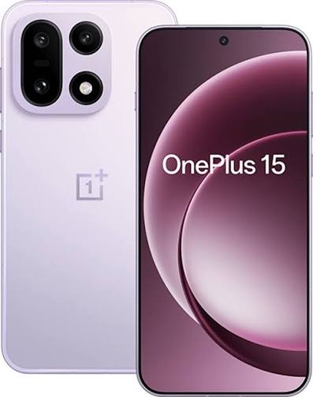
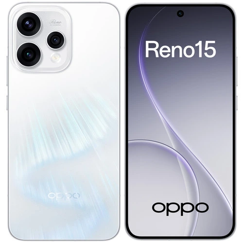
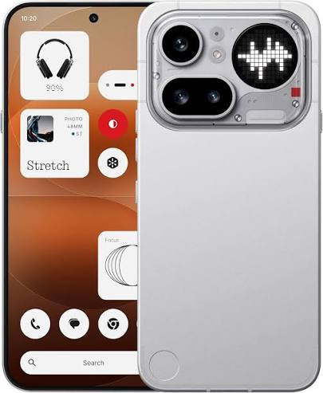

Redmi 9A
Redmi 9A - легендарный бестселлер среди смартфонов, истинный король ультрабюджетного гейминга начального уровня. Этот аппарат создан для тех, кому не нужно звонить и кто никуда не торопится.
Кратко о характеристиках: процессор MediaTek Helio G25, экран 6,53" IPS с разрешением HD+, 2/32 ГБ памяти, основная камера 13 Мп, аккумулятор 5000 мА·ч с зарядкой 10 Вт, разъём micro-USB и 3,5-мм выход для наушников.
OnePlus 15 - быстрый флагман из топового сегмента. Мощный процессор, качественный дисплей и большая батарея обеспечивают комфортное использование на много лет.
Компромиссом за эту мощность являются высокая цена и слабый блок камер. Снимки выходят хуже чем у конкурентов, а чтобы как-то это исправить - улучшаются нейросетью.
Кратко о характеристиках: процессор Snapdragon 8 Elite Gen 5, экран 6,78" AMOLED с частотой обновления 165 Гц, 16/512 ГБ памяти, тройная камера 50+50+50 Мп, аккумулятор 7300 мА·ч с зарядкой 120 Вт, защита от воды и пыли IP69.
 Xiaomi 15T Pro
Xiaomi 15T Pro
Xiaomi 15T Pro - почти флагман, который за меньшую почти ничем не уступает моделям старше. Достаточный тип, камеры с фирменной оптикой Leica и периском для съёмки удалённых объектов - редкий набор для этого ценового сегмента. Тонкий корпус и большой яркий экран добавляют ощущения дорогого устройства.
Автономность здесь на высоте: ёмкая батарея спокойно переживает насыщенный день, а быстрая зарядка возвращает её к жизни за считанные минуты. К особенностям традиционно для Xiaomi можно отнести обилие предустановленных приложений и слегка перегруженный интерфейс.
Кратко о характеристиках: процессор MediaTek Dimensity 9400+, экран 6,83" AMOLED 144 Гц, 12/512 ГБ памяти, тройная камера Leica 50+50+12 Мп с объективом 5x, батарея 5500 мА·ч, зарядка 90 Вт, защита IP68.
Oppo Reno 15 - смартфон для тех, кто в последнюю очередь интересуется характеристиками. Ставка сделана на дизайн: тонкий корпус, изящные цвета и камеры, которые одинаково хорошо справляются и с портретами, и с селфи.
Производительность при этом не рекордная, но достаточная для повседневных задач: мессенджеры, фото, навигация и нетребовательные игры идут без запинок. Батарея уверенно проживает день, а зарядка работает шустро. Если нужен красивый «ежедневный» смартфон с хорошей камерой — это очень достойный кандидат.
Кратко о характеристиках: процессор MediaTek Dimensity 8500, экран 6,7" AMOLED 120 Гц, 12/256 ГБ памяти, камера 50 Мп с телевиком, батарея 6500 мА·ч, быстрая зарядка 80 Вт.
Nothing Phone (4a) Pro - самый заметный смартфон в списке, причём в прямом смысле: фирменный Glyph-интерфейс из светящихся полос на прозрачной задней панели невозможно не заметить. Это устройство для тех, кто устал от одинаковых «кирпичиков» и хочет, чтобы телефон отражал индивидуальность владельца. Даже просто лежа на столе, он выглядит как арт-объект.
Начинка умеренная, но сбалансированная: чистая и лёгкая оболочка Nothing OS без лишнего мусора, приличная камера и честная автономность на день. Главный компромисс - средний уровень производительности, зато взамен вы получаете самый оригинальный дизайн на рынке и интересную оболочку.
Кратко о характеристиках: процессор Snapdragon 7s Gen 4, экран 6,77" AMOLED 120 Гц, 8/256 ГБ памяти, камера 50 Мп с зумом, батарея 5000 мА·ч, зарядка 50 Вт, фирменный Glyph-интерфейс и чистый Android.